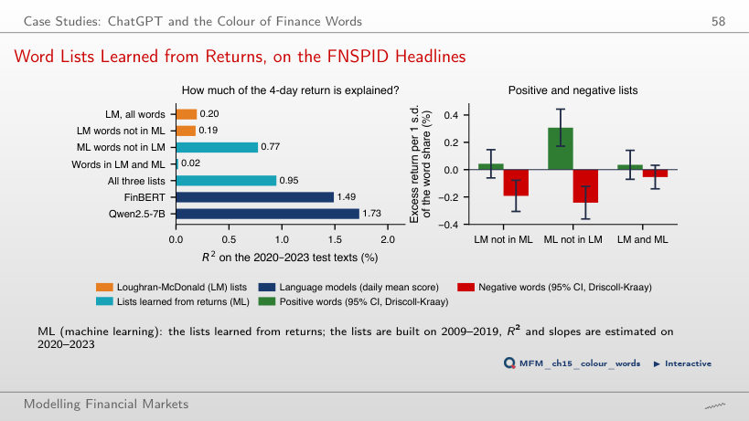

The slide of the lecture is on the left, the same figure on the right, computed in the browser from the same data. The ▶ button moves the parameter step by step.
Dictionaries · Labelled Data and Evaluation · Language Models: FinBERT and LLMs · Embeddings as Features · Look-Ahead Bias and Memorisation · From Sentiment to a Trading Signal · Sentiment Scores Are Estimates · Case Studies: ChatGPT and the Colour of Finance Words · AI for Scientific Discovery
Dictionaries
Negative for a Psychologist, Neutral for an Accountant

Answer
Below 10% for each word: 2 of the 106 sentences with "service" (1.9%), 7 of the 104 with "capital" (6.7%) and 3 of the 79 with "board" (3.8%). The sign of a word in the dictionary does not determine the label of the sentence. Nor would a word unrelated to tone give 50%: it would occur in negative sentences at the frequency of the negative class in the corpus, 12.5%.
Labelled Data and Evaluation
Eleven Classifiers, Two Data Sets: No Single Winner

Answer
TF-IDF + logistic regression, with 83.2%. FinBERT has 72.5%, zero-shot Qwen2.5-7B 74.2% and Qwen2.5-14B 72.4%: neither domain adaptation nor parameter count guarantees first place. All three dictionaries stay below the "always neutral" benchmark (65.6%). TF-IDF + LR is trained on Twitter labels, so the comparison does not isolate the effect of the architecture.
Language Models: FinBERT and LLMs
Bigger Is Not Always Better

Answer
14B. At P3, macro-F1 is 57.8% for 1.5B, 71.8% for 7B and 73.3% for 14B. At P1, 7B led: 72.6%, against 71.3% for 14B and 55.3% for 1.5B. The ranking also depends on the prompt: the advantage observed at P1 does not automatically carry over to P3.
Embeddings as Features
Can Generic Text Vectors Measure Sentiment?

Answer
Linear separation in this plane is modest, but the result does not rule out useful information in the other dimensions. PCA maximises explained variance without using the labels. Here the AUC measures only the ranking of positive against negative headlines; it is not three-class accuracy. A logistic regression on all 384 dimensions reaches 78.6% accuracy on Twitter.
How Many Labels Do You Need?

Answer
400. The mean is 71.9% at 200 labels and 73.3% at 400; FinBERT has 72.5%. Some training runs already beat the benchmark at 200, and at 800 all ten do. The threshold of 400 concerns the mean, not every sample. TF-IDF starts lower (66.9% at 100 labels) but reaches about 83% with all 9,543 labels, against 78.6% for embeddings.
Look-Ahead Bias and Memorisation
Memory Measured: Months Yes, Days No

Answer
Discrimination above 0.5, consistent with memorisation, without identifying the mechanism on its own. The result measures how well past months are discriminated: it does not separate memorisation from calendar or regime regularities, nor does it establish future performance. For single days of Apple, the AUC stays between 0.48 and 0.52. On the 23 months after the release, the AUC is 0.59, with a wide interval, approximately [0.35; 0.84]: about 101 months would be needed.
From Sentiment to a Trading Signal
The Timestamp Problem: Dates, Not Times

Answer
No. 99.8% of the headlines are stamped exactly 00:00 UTC, so the source gives only the date. At UTC−5, 00:00 UTC becomes 19:00 on the previous day, but the conversion only changes how the stamp is displayed, without adding the publication time. The returns of days d and d+1 may therefore still contain the reaction, and the first return used as a tradable forecast is that of day d+2.
Reaction versus Prediction: Headlines Describe Prices

Answer
We do not detect slopes different from zero at the two-sided 5% level, with standard errors clustered by day. The t-statistics are −0.25 for FinBERT, +1.19 for Qwen and −0.01 for LM; none exceeds the asymptotic reference value 1.96 in absolute value. This is a lack of evidence in this specification, not proof of exactly zero effects. On day d the slopes are large: FinBERT +39.2 bp (t = 17.27) and Qwen +41.4 bp (t = 19.07); many headlines report the price move itself.
Cumulative Strategy Returns: No Net Profit

Answer
About −13.36 bp a day. An active day pays 4c: entry and exit for the stock position and for the SPY hedge. The net mean is 5.64 − 0.95 × 4 × 5 ≈ −13.36 bp. +0.89 bp counts a single direction; −3.86 bp counts a single round trip. The Sharpe ratio falls from +0.63 to −1.48, and the break-even cost is 1.5 bp per trade.
Sentiment Scores Are Estimates
PPI on Twitter Headlines: the Bias Correction Is the Main Gain

Answer
No: the uncertainty of the mean score falls, but the bias remains. More scores reduce sampling error; they do not correct the bias of the model. PPI estimates the mean difference f − Y on a labelled sample and subtracts it from the mean score. At n = 100, intervals with nominal level 95% have empirical coverage of 94.3% in the lecture and 94.4% in the browser; the mean width is 0.204 in the lecture and 0.203 in the browser, against 0.229 with human labels only.
Case Studies: ChatGPT and the Colour of Finance Words
Which Models Read the News Right, and Which Earn the Drift

Answer
Identifying the initial reaction does not guarantee profitable subsequent returns. The initial reaction and the drift concern different windows: information already reflected in the price can identify the reaction without offering a later gain. GPT-4 and GPT-3.5 have the highest drift Sharpe ratios, 2.97 and 1.66, but they are not the only positive ones: DistilBart has 1.26, BART-Large 1.05. The models with hit rates of 53–66% have negative Sharpe ratios.
Word Lists Learned from Returns, on the FNSPID Headlines

Answer
A stronger association on the 2020–2023 texts, without establishing a tradable forecast. The lists are learned on 2009–2019, but the slopes and R² are estimated on 2020–2023, and the 4-day return window may include the move reported by the headline: many ML words ("jumped", "slumped", "gainers") describe the price move itself. The R² difference is 0.58 percentage points, 95% CI [0.14; 1.02] (bootstrap over blocks of 10 days); it is not a strategy return. FinBERT (1.49%) and Qwen2.5-7B (1.73%) explain more than any list.
AI for Scientific Discovery
The Specification Curve: Is It Different from Noise?

Answer
No. The relevant comparison uses the joint distribution of the number of exceedances, which keeps the dependence across specifications: the signs of the positions are flipped at random in blocks of 10 days. The probability of at least 3 specifications with t > 1.96 is 0.113 in the lecture and 0.103 in the browser, both above 0.05. We do not reject the null, which does not establish that every effect is zero. No specification passes the Bonferroni cut-off, |t| > 3.20.
Labelled texts: Financial PhraseBank (Malo et al., 2014) and Twitter Financial News (2022). Dated headlines: FNSPID (Dong, Fan and Peng, 2024), 16 US stocks, 2009–2023; EODHD daily prices. The scores of the dictionaries, FinBERT, the Qwen2.5 models, MiniLM and TF-IDF are those computed in the chapter. Case studies: Lopez-Lira and Tang (2026), Table 5; Garcia, Hu and Rohrer (2023), replicated on the FNSPID headlines.